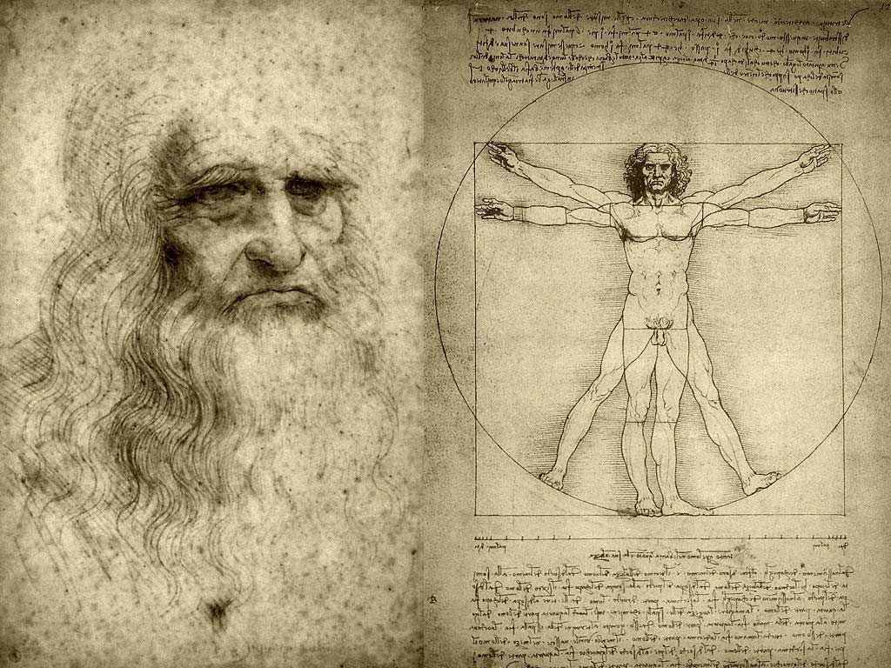

Teorias Cientificas

O que são Teorias Cientificas
Teorias Cientificas: Sao propostas bem elaboradas, que tem como objetivo levar-nos a refletir sobre o que somos, de onde viemos, e para onde vamos.
E definida como uma explicacao bem detalhada de um fenomeno.
As
teorias representam as melhores explicacoes de varios fenomenos, mas tenha em
mente de que elas sao sempre tentativas e nao conclusivas, nao sao verdades absolutas ou dogmas.
Uma teoria bem aceita nos dias de hoje podera muito bem ser modificada ou ainda descartada; com novos estudos novas tecnicas, novas observacoes,e experiencias,uma Teoria pode ser totalmente modificada, descartada, ou cada vez mais aceita nos meios cientificos.
Teorias sao uteis principalmente por seu valores predictivos. As predicoes baseadas em teorias sao testadas com novos experimentos. Teorias que fazem predicoes acertadas e com sussesso sao geralmente bem aceitadas pela comunidade cientifica.
Copyright BEYTUDODEBOM.COM 2016